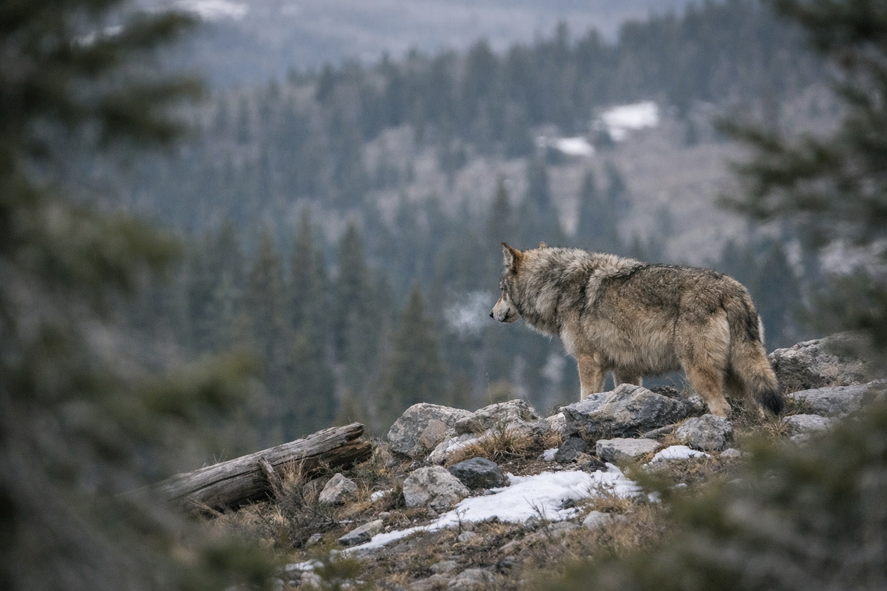
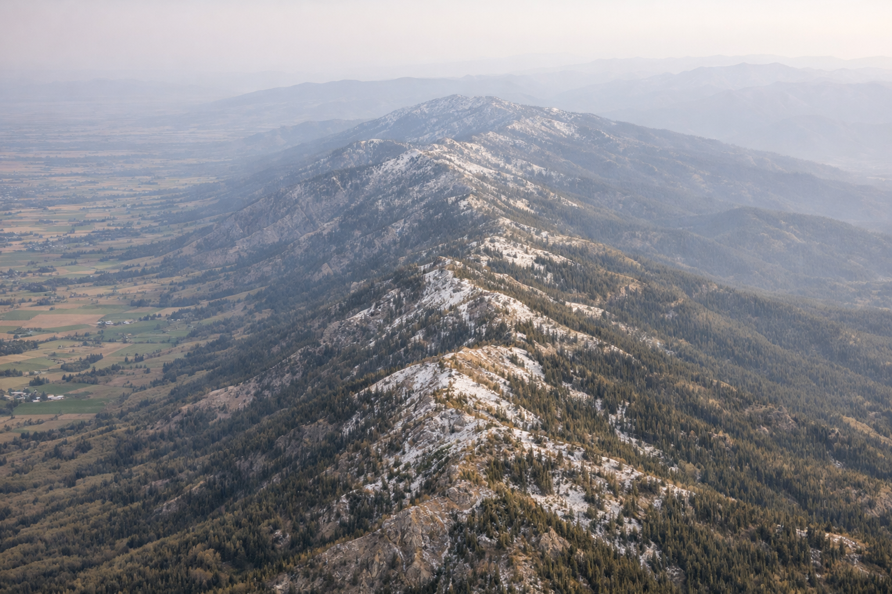
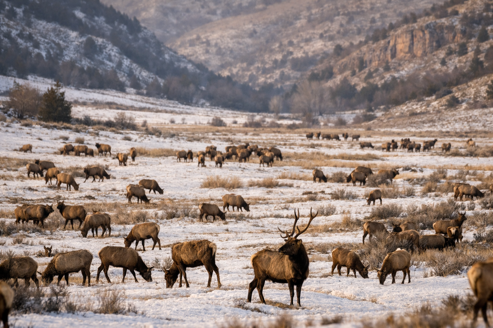

Every winter, somewhere between 400 and 600 wild elk funnel down out of the mountains of southeastern Idaho and into a narrow canyon east of Hyrum, Utah. They come for the hay. Bales stacked by state wildlife workers at a place called Hardware Ranch, a 19,000-acre wildlife management area tucked into Blacksmith Fork Canyon in Cache County. The state has been feeding them here since 1948. Families drive up on weekends to take horse-drawn sleigh rides through the herd. It is, by any measure, one of Utah's most beloved wildlife traditions.
What the informational signs at the visitor center don't mention is this: GPS collar data from those elk shows some of them traveling as far as Montpelier, Idaho, deep into the heart of country with documented wolf pack territory, before drifting south again each winter. And in 2002, a pack of wolves followed them. Wildlife investigators confirmed the depredation of 15 sheep and lambs near Hardware Ranch that year. Defenders of Wildlife paid out two separate compensation claims to Cache County sheep ranchers in 2002 and 2003 for wolf-killed livestock.
The Hardware Ranch corridor is not an anomaly. It is one half of a documented, formally mapped, scientifically analyzed wolf highway running straight through the state of Utah — a highway the state government has spent decades pretending doesn't exist.

Bear River Range · Cache County, UtahThe geography
Two Routes South
Utah sits at the convergence of two major wolf dispersal corridors connecting the Greater Yellowstone Ecosystem to the Southern Rockies of Colorado. Understanding them requires stepping back and looking at the geography.
The first runs along the Bear River Range, a long narrow spine of mountains between 9,000 and 10,000 feet that straddles the Utah-Idaho border directly above Cache Valley. In 2006, the U.S. Forest Service formally identified the Bear River Range as a "regionally important wildlife corridor." The Yellowstone to Uintas Connection, a conservation nonprofit based in Cache Valley, has since placed roughly 40 trail cameras along its length to document wildlife movement. Their research, along with GIS analysis by the Wild Utah Project, identified the Bear River Range as the most likely route for wide-ranging carnivores moving between the Uinta Mountains and the mountains of Wyoming and Idaho.
The second corridor follows the Green River south from Wyoming through the Flaming Gorge country of Daggett County in northeastern Utah, remote canyon terrain that biologist after biologist has identified as some of the highest-quality wolf habitat in the state. A 2002 federal habitat analysis commissioned as part of Utah's wolf management planning found "high connectivity of intact habitat" between occupied wolf territory in Wyoming and Idaho and both the Bear River Range and Flaming Gorge National Recreation Area.
Both corridors feed into the same destination: the Uinta Mountains, the largest east-west trending mountain range in the lower 48, with documented historical populations of wolves, bears, wolverines, lynx, and every other large carnivore native to the region.
GPS collar data from Hardware Ranch elk shows individual animals traveling as far as Montpelier, Idaho and Cokeville, Wyoming before returning south each winter. That migration route traces the Bear River Range almost exactly, creating a living prey corridor from documented wolf range in southeastern Idaho into Cache County every year without exception.

Bear River Range spine · Cache County — looking south toward the UintasDocumented record
The Wolves Who Used the Map
The corridors aren't theoretical. Wolves have been using them.

Hardware Ranch · Blacksmith Fork Canyon, Cache County — the dinner bellUnconfirmed sighting of a possible lone wolf in the Bear River Range, reported to the Associated Press. The location sits directly on the corridor spine.
A pack kills 15 sheep and lambs near Hardware Ranch. Defenders of Wildlife pays out two separate livestock compensation claims to Cache County ranchers. Separately, wolf 253M from Yellowstone's Druid Pack is captured in a coyote snare in Morgan County, 200 miles from his pack, and returned to Wyoming.
A young female wolf breaks from her pack north of Yellowstone and travels through Montana, Wyoming, Idaho, and into the Uinta-Wasatch-Cache National Forest in Utah before crossing into Colorado through Dinosaur National Monument. Her collar-tracked route traces the Bear River-Uinta corridor with near-perfect precision. She is found dead near Meeker, Colorado on March 31, 2009, killed by sodium fluoroacetate, a poison illegal in Colorado since the 1970s.
A pilot with Alaska wolf-spotting experience spots five large canids near Dutch John Airport: two black, three gray. The color variation alone rules out coyotes. DWR biologists find tracks in snow and receive answering howls from a digital recording. Listed as a confirmed sighting — the first wolf pack in Utah since 1930. The pack is believed to have returned to Wyoming.
A rancher finds a calf killed by a gray wolf. The depredation is confirmed by bite marks, tracks, and scat. DWR sets traps but the wolf is not located.
A 4-year-old male wolf that had traveled from Idaho's panhandle near the Canadian border is spotted multiple times on the south slope of the Uinta Mountains. It is not seen again after fall 2022.
As of September 2025, the DWR confirms at least one lone male wolf is present in the state. Separately, a wolf from Colorado briefly enters Utah and is documented under the state's return agreement with Colorado Parks and Wildlife.
State agricultural officials kill three wolves on January 9 in the delisted zone of northern Utah. Conservation groups call it the first known pack in the state in nearly a century. No livestock depredations are reported. The removal is not announced publicly. The state discloses it only after journalists ask.
The official record
The Blind Spot
There is a pattern in the official record that is difficult to explain away.
The USFWS's annual wolf population reports consistently show no evidence of wolf packs in southern Idaho, northern Utah, or southwest Wyoming. That geographic gap aligns precisely with the two corridors described above, and with the state lines of a jurisdiction that has spent two decades working aggressively to prevent wolves from establishing. The University of Idaho's student newspaper noted the contradiction in a 2013 editorial: wolves were confirmed spreading into Oregon and Washington, but the territory between them and the southern Rockies remained, officially, empty.
The DWR's own website states that confirmed Utah sightings since 2004 total 21. What that number obscures is the geography of those sightings. The vast majority are concentrated in Cache, Rich, Morgan, and Daggett counties, forming a spatial pattern that maps almost perfectly onto the two corridors. It also obscures what happened before 2004: the Cache County depredations of 2002, the Morgan County snare capture of wolf 253M that same year, the unconfirmed sighting in the Mount Naomi Wilderness in 2000.
The DWR has stated repeatedly that it has found no evidence of breeding behavior or established packs in Utah. What is harder to explain is why the state's management posture — legally mandated by the 2010 Utah Wolf Management Act to prevent pack establishment in the delisted northern zone — makes confirmation of packs essentially impossible by design. When three wolves showing pack behavior appear in that zone, they are killed before any biological assessment of their status can be conducted. The January 2026 removal was not announced publicly. There were no reported livestock depredations associated with those three animals.
Assessment
What's Actually Out There
I want to be precise about what the evidence does and doesn't show.
It does not show an established resident wolf population in Utah. The DWR is correct that no breeding pairs have been documented within the state. It does show a consistent, multi-decade pattern of wolves using two specific corridors through Utah — corridors that have been formally identified by federal land managers, mapped by conservation scientists, documented by collared wolves, and confirmed through depredation records, track evidence, and howl responses going back at least 25 years.
It shows a seasonal elk migration that pulls prey animals and the predators that follow them out of documented wolf range in southeastern Idaho into Cache County every single winter. It shows the Forest Service identifying the spine of those mountains as a regionally important wildlife corridor. It shows a state government that has twice in the last two decades removed wolves from that landscape before their presence could become established fact.
The Yellowstone to Uintas Connection has 40 cameras running in the Bear River Range right now. The DWR has a GRAMA portal where anyone can request their wolf sighting and investigation records. Colorado's GPS-collared wolves are showing up on the monthly watershed map in drainages along Utah's eastern border, and the state has documented at least one Colorado wolf entering Utah in 2025.
The corridors are real. The prey is there. The habitat is intact. The only question — the one Utah keeps answering with a rifle — is whether wolves will be allowed to answer it themselves.
Utah DWR wolf management records; Utah Wolf Management Plan (2005); Switalski et al. (2002), "Wolves in Utah," commissioned federal habitat analysis; Frank Priestly, "Wolf Population Data Deserves Scrutiny," The Argonaut, University of Idaho (April 2013); Cache Valley Daily; Yellowstone to Uintas Connection annual reports; Kirk Robinson, "Yellowstone to Uintas," CounterPunch / Rewilding Institute (2020); Colorado Parks and Wildlife monthly wolf activity maps; Salt Lake Tribune; KSL News; Outdoor Life; Center for Biological Diversity; Defenders of Wildlife.